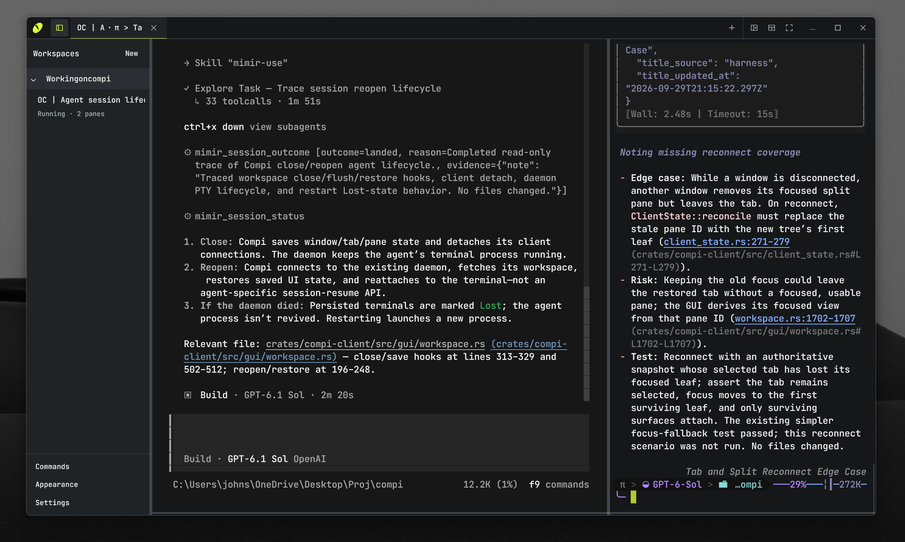
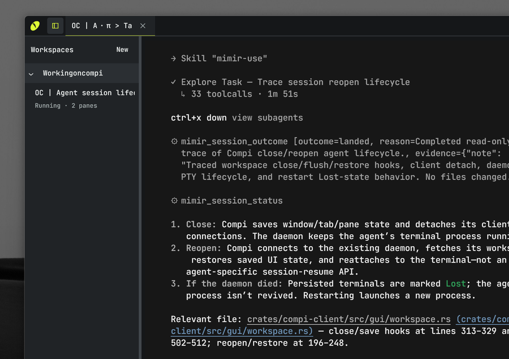

Close the
window.
Keep the work.
A native terminal and multiplexer for work that keeps running. Shells, agents, tabs and splits are right where you left them.


Room for
the work.
Give a project its own workspace. Keep a shell in one pane, an agent in another, and move between them without leaving the terminal.
Tabs and splits are native Compi actions. Focus, resize, detach, and restore them without a nested multiplexer or a prefix key.
OpenCode and Oh My Pi in the hero image are ordinary terminal apps running inside Compi.
The window goes.
The session stays.
The background server keeps your shells, terminal state, and history. Closing or crashing the client does not end the work.
Still a
terminal.
Use the tools you already use. Compi does not ask them to become plugins or change how they run.
It is a native client with a real terminal underneath. Ordinary shells and full-screen terminal apps work alongside coding agents.
Windows uses WSL2 for shells. macOS uses native Unix PTYs. Both have a Compi client designed for the platform.